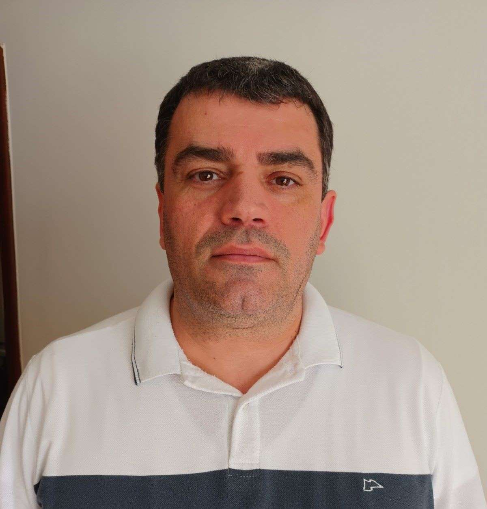

Sandro Ribeiro | WDD 130
Hello, my name is sandro. I am very happy to study at BYU. I am 51 years old and live in Uberaba - MG Brazil. I am married to Isis Daniely Ferreira Rocha Ribeiro and We have five children: Ana Clara Rocha Ribeiro, Diogo Antunes Rocha Ribeiro and Maria Cecília Rocha Ribeiro. I am a member of the Bom Retiro Ward and currently serve as first counselor in the Uberaba Stake.